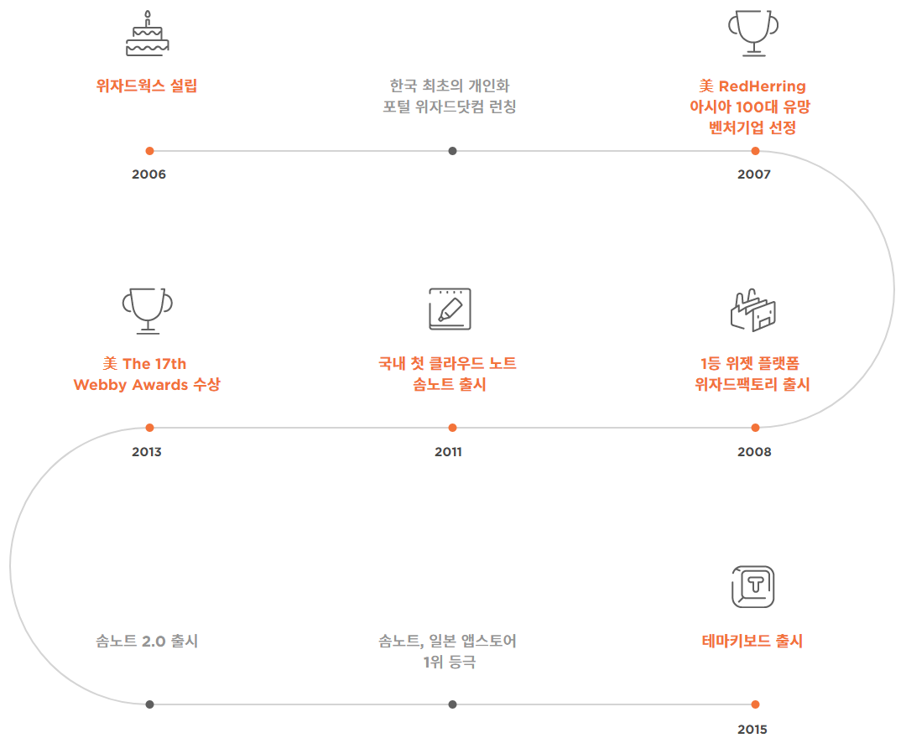
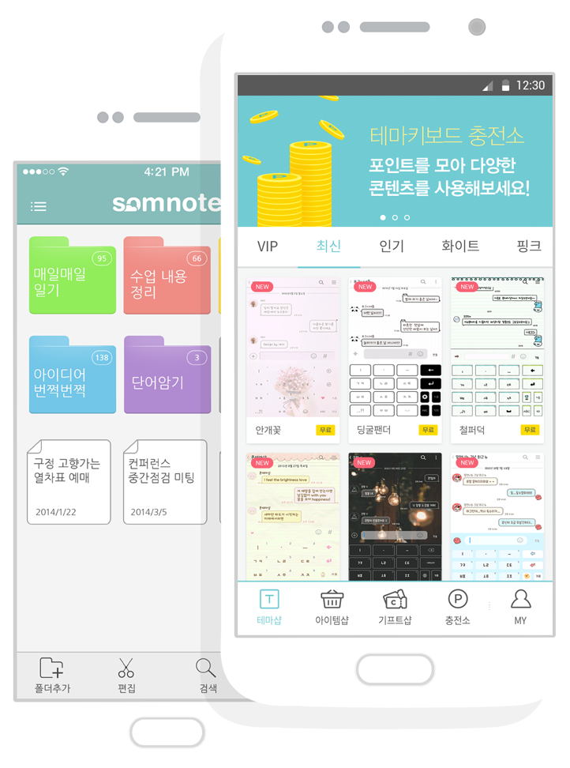

PHILOSOPHY
-
기술
기술적 진보가 없는 제품은 만들지 않습니다.
첫 제품이었던 개인화 포털 위자드닷컴부터 위젯 플랫폼 위자드팩토리, 지금의 솜노트와 테마키보드에 이르기까지 기술 기반 없이는 만들 수 없는 서비스를 개발하는 것이 우리의 존재 가치 입니다.
-
사용자 경험
사용성이 확보된 제품만 만들고자 노력합니다.
기술에 가치를 둔 서비스는 대개 어려워지기 마련입니다. 위자드웍스는 사용자가 실제 필요로 하는 것, 사용하면서 삶의 큰 편의를 느낄 수 있는 제품을 만들기 위해 노력합니다.
-
혁신
세상에 없던 혁신적인 서비스를 준비합니다.
기술과 사용자경험을 더해 세상에 또 다른 혁신을 만들어 내고 있습니다. 변화를 이끌어가는 중심에 위자드웍스가 있습니다.
HISTORY

MORE ABOUT WZD

모바일 위자드웍스는 사용자가 모바일 디바이스를 활용하여 대화와 기록을 할 때 가장 즐겁고 효과적인 서비스를 제공하는 회사입니다.